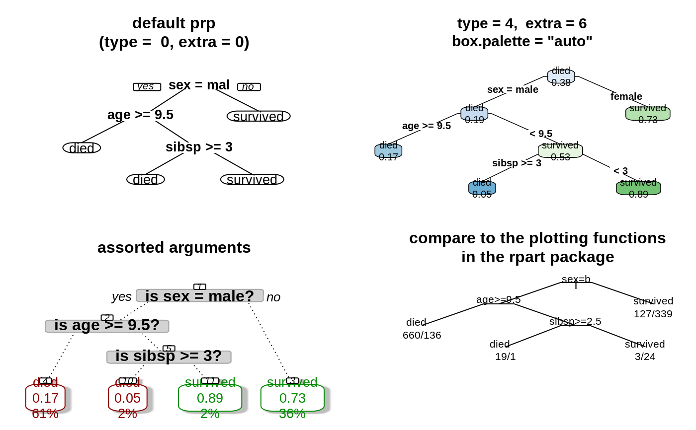

prp.RdPlot an rpart model.
This function combines and extends plot.rpart and
text.rpart in the rpart package.
For an overview, please see the package vignette
Plotting rpart trees with the rpart.plot package.
The function rpart.plot provides a simplified interface
to this function.
First-time users should use rpart.plot rather than
this function.
The arguments of this function are a superset of those of
rpart.plot and some of the arguments have different
defaults.
See the rpart.plot help page for a table showing the
different defaults.
(The defaults are different for historical reasons: for backwards
compatibility the defaults of prp haven't changed,
whereas the defaults of rpart.plot were changed when
type="auto" and box.palette were introduced
in version 2.0.0 of this package.)
prp(x=stop("no 'x' arg"), type=0, extra=0, under=FALSE, fallen.leaves=FALSE, nn=FALSE, ni=FALSE, yesno=TRUE, branch=if(fallen.leaves) 1 else .2, uniform=TRUE, left=TRUE, xflip=FALSE, yflip=FALSE, digits=2, varlen=-8, faclen=3, roundint=TRUE, cex=NULL, tweak=1, clip.facs=FALSE, clip.right.labs=TRUE, compress=TRUE, ycompress=uniform, Margin=0, space=1, gap=NULL, snip=FALSE, snip.fun=NULL, trace=FALSE, box.col=0, box.palette=0, pal.thresh=NULL, pal.node.fun=FALSE, border.col=col, round=NULL, leaf.round=NULL, shadow.col=0, prefix="", suffix="", xsep=NULL, under.percent=2, under.font=font, under.col=1, under.cex=.8, split.cex=1, split.font=2, split.family=family, split.col=1, split.box.col=0, split.border.col=0, split.lty=1, split.lwd=NULL, split.round=0, split.shadow.col=0, split.prefix="", right.split.prefix=NULL, split.suffix="", right.split.suffix=NULL, facsep=",", eq=" = ", lt=" < ", ge=" >= ", branch.col=if(is.zero(branch.type)) 1 else "gray", branch.lty=1, branch.lwd=NULL, branch.type=0, branch.tweak=1, min.branch.width=.002, branch.fill=branch.col, nn.cex=NULL, nn.font=3, nn.family="", nn.col=1, nn.box.col=0, nn.border.col=nn.col, nn.lty=1, nn.lwd=NULL, nn.round=.3, yes.text="yes", no.text="no", node.fun=NULL, split.fun=NULL, FUN="text", nspace=branch, minbranch=.3, do.par=TRUE, add.labs=TRUE, clip.left.labs=(type == 5), fam.main="", yshift=0, yspace=space, shadow.offset=.4, split.adj=NULL, split.yshift=0, split.space=space, split.yspace=yspace, split.shadow.offset=shadow.offset, nn.adj=.5, nn.yshift=0, nn.space=.8, nn.yspace=.5, ygap=gap/2, under.ygap=.5, yesno.yshift=0, xcompact=TRUE, ycompact=uniform, xcompact.ratio=.8, min.inter.height=4, max.auto.cex=1, min.auto.cex=.15, ycompress.cex=.7, accept.cex=1.1, shift.amounts=c(1.5, 2), Fallen.yspace=.1, boxes.include.gap=FALSE, legend.x=NULL, legend.y=NULL, legend.cex=1, ...)
| x | An |
|---|---|
| type | Type of plot. Possible values: 0 Default. Draw a split label at each split and a node label at each leaf. 1 Label all nodes, not just leaves.
Similar to 2 Like 3 Draw separate split labels for the left and right directions. 4 Like 5 New in version 2.2.0.
Show the split variable name in the interior nodes. |
| extra | Display extra information at the nodes. Possible values: "auto" (case insensitive) 0 Default. No extra information. 1 Display the number of observations that fall in the node
(per class for 2 Class models: display the classification rate at the node,
expressed as the number of correct classifications and the number
of observations in the node. 3 Class models: misclassification rate at the node, expressed as the number of incorrect classifications and the number of observations in the node. 4 Class models: probability per class of observations in the node (conditioned on the node, sum across a node is 1). 5 Class models:
like 6 Class models: the probability of the second class only. Useful for binary responses. 7 Class models:
like 8 Class models: the probability of the fitted class. 9 Class models: The probability relative to all observations -- the sum of these probabilities across all leaves is 1. This is in contrast to the options above, which give the probability relative to observations falling in the node -- the sum of the probabilities across the node is 1. 10 New in version 2.2.0.
Class models:
Like 11 New in version 2.2.0.
Class models:
Like +100 Add Note: Unlike |
| under | Applies only if |
| fallen.leaves | Default |
| nn | Display the node numbers.
Default |
| ni | Display the node indices,
i.e. the row numbers of the nodes in the object's |
| yesno | One of |
| branch | Controls the shape of the branch lines.
Specify a value between |
| uniform | If |
| left | Default |
| xflip | Default |
| yflip | Default |
| digits | The number of significant digits in displayed numbers.
Default |
| varlen | Length of variable names in text at the splits
(and, for class responses, the class in the node label).
Default 0 use full names. greater than 0 call less than 0 truncate variable names to the shortest length where they are still unique,
but never truncate to shorter than |
| faclen | Length of factor level names in splits.
Default |
| roundint | New in version 3.0.0.
If |
| cex | Default |
| tweak | Adjust the (possibly automatically calculated) |
| clip.facs | New in version 3.0.0.
Default |
| clip.right.labs | Applies only if |
| compress | If |
| ycompress | If |
| Margin | Extra white space around the tree, as a fraction of the graph width.
Default |
| space | Horizontal space to the box border on each side of the node label text,
in character widths.
Default |
| gap | Minimum horizontal gap between the (possibly invisible) boxes, in character widths.
Default |
| snip | Default |
| snip.fun | Function invoked after each mouse click when The following control the node labels. |
| trace | Default |
| box.col | Color of the boxes around the text.
Default |
| box.palette | Palette for coloring the node boxes based on the fitted value.
This is a vector of The special value The special value Otherwise specify a predefined palette
e.g. Prefix the palette name with The |
| pal.thresh | Applies when |
| pal.node.fun | Specifies how the |
| border.col | Color of the box border around the text.
Default |
| round | Controls the rounding of the corners of the node boxes.
Default |
| leaf.round | Controls the rounding of the corners of the leaf node boxes.
Default |
| shadow.col | Color of the shadow under the boxes.
Default |
| prefix | Default |
| suffix | Default |
| xsep | String which separates the individual counts and probabilities
in node labels when |
| under.percent | Control whitespace before the percentage (when 100 is used with the The following control the text under the boxes (apply only if
|
| under.font | Font of the text under the box. Default |
| under.col | Color of the text under the box.
Default |
| under.cex | Size of the text under the box relative to the text in the box.
Default The following control the split labels. |
| split.cex | Size of the split text relative to |
| split.font | Font for the split labels.
Default |
| split.family | Font family for the split labels. |
| split.col | Color of the split label text.
Default |
| split.box.col | Color of the split boxes.
Default |
| split.border.col | Color of the split box borders.
Default |
| split.lty | Line type for the split box borders.
The default is |
| split.lwd | Line width of the split box border relative to |
| split.round | Controls the rounding of the corners of the split boxes.
Default |
| split.shadow.col | Color of the shadow under the split boxes.
Default |
| split.prefix | Default |
| right.split.prefix | Default |
| split.suffix | Default |
| right.split.suffix | Default |
| facsep | Default |
| eq | Default |
| lt | Default |
| ge | Default The following control the branches. |
| branch.col | Color of the branch lines.
Default |
| branch.lty | Branch line type.
Default |
| branch.lwd | Line width of the branch lines relative to |
| branch.type | Default 0 The default. The branch lines are drawn conventionally. Otherwise set Note: with a nonzero |
| branch.tweak | Default |
| min.branch.width | Default |
| branch.fill | Color used to fill the wide branch lines.
Applies only if The following control the node numbers (with |
| nn.cex | Default |
| nn.font | Font for the node numbers.
Default |
| nn.family | Font family for the node numbers.
Default |
| nn.col | Color of the node number text.
Default |
| nn.box.col | Color of the boxes around the node numbers.
Default |
| nn.border.col | Color of the box border around the node numbers.
Default |
| nn.lty | Line type of the node number box border.
Default |
| nn.lwd | Line width of the node box border relative to |
| nn.round | Controls the rounding of the corners of the node number boxes.
Default |
| yes.text, no.text | Text displayed when The following are user definable functions. |
| node.fun | The function that generates the text at the node labels.
The default is |
| split.fun | The function that generates the text at the splits.
The default is |
| FUN | The function that displays the text on the screen.
Default The following are esoteric parameters, mostly for the graph layout engine. |
| nspace | Applies only when |
| minbranch | Applies only when |
| do.par | Default |
| add.labs | Default |
| clip.left.labs | Like |
| fam.main | Font family for the main text. Default |
| yshift | Vertical position of the labels, in character heights relative to their default position.
Default |
| yspace | Vertical space to the box border above and below the node label text, in character heights.
Default |
| shadow.offset | Offset of the shadow from the boxes, in character widths.
Default |
| split.adj | Horizontal position of the split text.
In string width units, as is the convention for |
| split.yshift | Vertical position of the split labels,
in character heights relative to their default positions.
Default |
| split.space | Horizontal space between the split label text and the box,
in character widths.
Default |
| split.yspace | Vertical space between the split label text and the box, in character heights.
Default |
| split.shadow.offset | Offset of the shadow from the split boxes, in character widths.
Default |
| nn.adj | Horizontal position of the node label text.
Default |
| nn.yshift | Vertical position of the node numbers, in character heights relative to their default positions.
Default |
| nn.space | Horizontal space to the box border on each side of the node number text,
in character widths.
Default |
| nn.yspace | Vertical space to the box border above and below the node number text, in character heights.
Default |
| under.ygap | Applies if text is plotted under the box
(i.e. if |
| yesno.yshift | Vertical position of "yes" and "no"
in character heights relative to their default position.
Default |
| ygap | Minimum vertical gap between boxes, in character heights.
Default |
| xcompact | If |
| ycompact | If |
| xcompact.ratio | Default |
| min.inter.height | Default |
| max.auto.cex | Clamp the maximum automatically calculated |
| min.auto.cex | Default |
| ycompress.cex | Default |
| accept.cex | Accept shifting only if it causes at least this much improvement in |
| shift.amounts | Default |
| Fallen.yspace | Extra space for fallen leaves.
Default |
| boxes.include.gap | Default |
| legend.x | Applies only to models with a multilevel class response
(not binary or anova models, for which no legend is drawn). |
| legend.y | Like |
| legend.cex | Like |
| ... | Extra |
A list with the following components. With the default args most of these are calculated automatically.
The rpart object.
Identical to the x argument passed in unless snip was used.
The snipped nodes, NULL unless snip was used.
The graph limits.
The node coords.
The branch line coords.
The node labels.
The node label cex.
The coords of the boxes around the nodes.
The split labels.
The split label cex.
The coords of the boxes around the splits.
The package vignette Plotting rpart trees with the rpart.plot package
rpart.plot
Functions in the rpart package:
plot.rpart
text.rpart
rpart
data(ptitanic) tree <- rpart(survived ~ ., data = ptitanic, cp = .02) # cp = .02 because want small tree for demo old.par <- par(mfrow = c(2,2)) # put 4 figures on one page prp(tree, main = "default prp\n(type = 0, extra = 0)") prp(tree, main = "type = 4, extra = 6\nbox.palette = \"auto\"", type = 4, extra = 6, # label all nodes, show prob of second class box.palette = "auto", # auto color the nodes based on the model type faclen = 0) # faclen = 0 to print full factor names cols <- ifelse(tree$frame$yval == 1, "darkred", "green4") # green if survived prp(tree, main = "assorted arguments", extra = 106, # display prob of survival and percent of obs nn = TRUE, # display the node numbers fallen.leaves = TRUE, # put the leaves on the bottom of the page shadow.col = "gray", # shadows under the leaves branch.lty = 3, # draw branches using dotted lines branch = .5, # change angle of branch lines faclen = 0, # faclen = 0 to print full factor names trace = 1, # print the auto calculated cex, xlim, ylim split.cex = 1.2, # make the split text larger than the node text split.prefix = "is ", # put "is " before split text split.suffix = "?", # put "?" after split text col = cols, border.col = cols, # green if survived split.box.col = "lightgray", # lightgray split boxes (default is white) split.border.col = "darkgray", # darkgray border on split boxes split.round = .5) # round the split box corners a tad#> cex 1 xlim c(0, 1) ylim c(0, 1)# compare to the plotting functions in the rpart package plot(tree, uniform = TRUE, compress = TRUE, branch = .2)par(old.par)